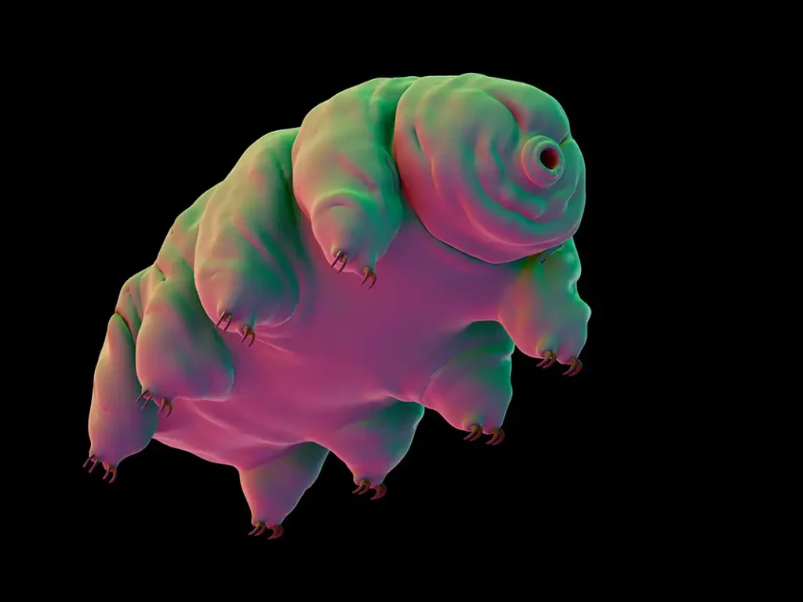
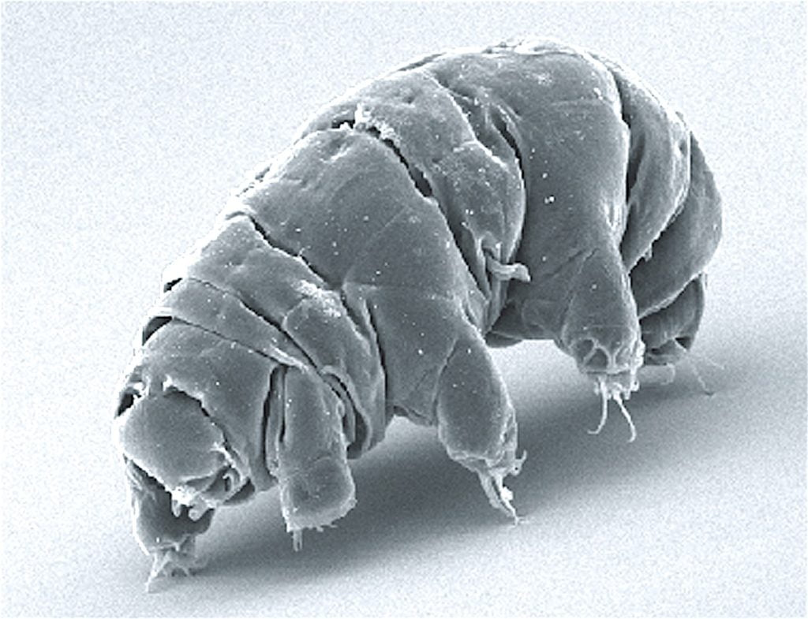
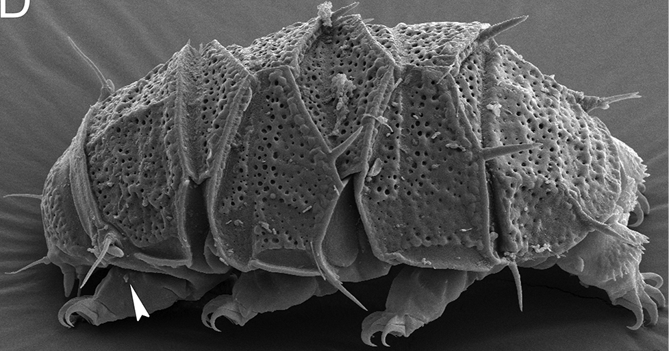
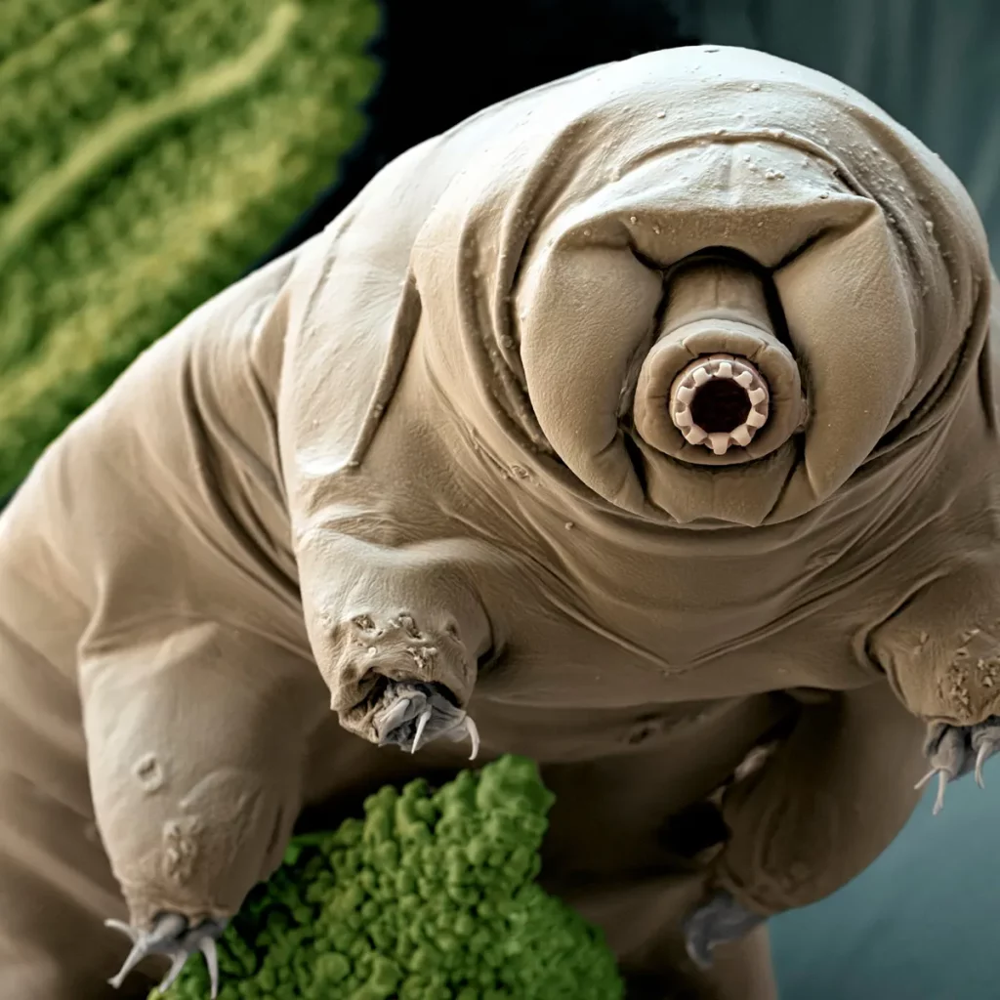

ဒီ ရေဝံ ကို သာမန် မျက်စေ့နဲ့ ကြည့်လို့ မမြင်နိုင်ပါဘူး။ သူ့ကို အဏုကြည့် မှန်ပြောင်း (microscope) နဲ့ ကြည့်မှသာမြင်နိုင်မှာ ဖြစ်ပါတယ်။ သူ့ပုံကလဲ ဒစ်စနီ ရုပ်ရှင်ထဲက ထွက်လာတဲ့ အကောင်လေလားလို့ ထင်မှတ်မှား ရမယ့် ပုံမျိုးပါ။ ဒစ်စနီ ကလေး ရုပ်ရှင်တွေ ထဲက မွန်စတာ (monster) တွေလိုပဲ ထူးထူးဆန်းဆန်း ပုံဆိုးပန်းဆိုး ရှိပေမယ့် အန္တရာယ် ရှိတဲ့ ပုံလဲ ပေါက်မနေ ပြန်ပါဘူး။
သူ့ပုံက ဝက် လိုပဲ ခပ်ဖိုင့်ဖိုင့်နဲ့၊ နောက်ပြီး သူ့မှာ ခြေချောင်း ၈ ချောင်း ပါဝင်ပါတယ်။ ဒီ သတ္တဝါဟာ ရေထဲမှာ ရှင်သန် ပေါက်ဖွားတဲ့ သတ္တဝါ မျိုးစိတ် တစ်ခု ဖြစ်ပါတယ်။ ရေသောက်တာ များပြီး ဖောနေ သလားလို့တောင် ထင်စရာ ရုပ်ရည် ပိုင်ဆိုင်သူပါ။
ဒါပေမယ့် ဒီ အကောင်လေးဟာ အထင်သေးလို့တော့ မရပါဘူး။ သူဟာ အလွန် ဆိုးရွား ပြင်ထန်တဲ့ ပတ်ဝန်းကျင် မှာတောင် အသက်ရှင်သန် နေထိုင်နိုင်တဲ့ အစွမ်းရှိသူ ဖြစ်ပါတယ်။ နောက်ဆုံး အာကာသ ဟင်းလင်းပြင် ထဲက လေမရှိတဲ့ ရပ်ဝန်း အခြေအနေ မှာတောင်မှာ အသက်ရှင်သန် နိုင်စွမ်း ရှိသူ ဖြစ်ပါတယ်။

ဒီလို တာဒီဂရိတ်ရဲ့ ခံနိုင်ရည် အစွမ်းဟာ သိပ္ပံ ပညာရှင် တွေကို အထူးပဲ စိတ်ဝင်စားစေပါတယ်။ ဘယ်လိုလုပ်ပြီး ဒီရောက် အကြမ်းခံ နိုင်ရလဲ ဆိုတာကို ပညာရှင်တွေ စဉ်းစားမရ ဖြစ်ခဲ့ ရပါတယ်။
ဒါပေမယ့် ဒီ တာဒီဂရိတ် ဘယ်လိုလုပ်ပြီး ဒီလောက် ဆိုးရွားတဲ့ ပတ်ဝန်းကျင်မှာ အသက်ရှင် နိုင်ရသလဲ ဆိုတဲ့ အဖြေကို အခုတော့ သိပြီလို့ ဆိုပါတယ်။
ဒီအဖြေ ရဖို့ သိပ္ပံ ပညာရှင် တွေဟာ တာဒီဂရိတ် ရေဝံ တွေ လုံးဝ ရေခန်းခြောက် သွားတဲ့ အခြေအနေမှာတောင် ဘယ်လို ဆက်လက် အသက်ရှင် နေနိုင်ကြလဲ ဆိုတာကို သုတေသန စမ်းသပ်မှု ပြုလုပ်ခဲ့ ကြပါတယ်။
ရေဝံ တွေဟာ ရေထဲမှာ နေတဲ့ သတ္တဝါတွေဆိုတော့ ကိုယ်တွင်းက ရေခန်းခြောက်သွားရင် အသက် သေဆုံးသွား ကြရမှာ ဖြစ်ပါတယ်။ (ရေနေ သတ္တဝါ တွေမှ မဟုတ်ပါဘူး၊ ဘယ်သက်ရှိမဆို ရေခန်းသွားရင် သေဆုံးကုန်မှာ ဖြစ်ပါတယ်။)
အရင် သုတေသန တွေအရ တာဒီဂရိတ် တွေဟာ ရေခန်းခြောက် တော့မယ်ဆိုတဲ့ အခြေအနေ ကြုံလာရင် သူ့ရဲ့ ခေါင်းနဲ့ ခြေလက်တွေကို ကိုယ်တွင်းကို ဆွဲသွင်း လိုက်ပါတယ်။ ဒီလိုနည်းနဲ့ သူ့ရဲ့ ကိုယ်ခန္ဓာကို ဘော်လုံးလေး တစ်လုံး အဖြစ် ပြောင်းပစ်လိုက်ပါတယ်။

မြောက်ကာရိုလိုင်းနား တက္ကသိုလ် ချက်ပယ်လ်ဟေးလ် (University of North Carolina, Chapel Hill) က သုတေသီ တစ်ဦးဖြစ်တဲ့ သောမတ်စ် ဘုသ်ဘီ (Thomas Boothby) ဟာ ဒီ ဖြစ်ရပ်ကို အထူးပဲ စိတ်ဝင် စားခဲ့ပါတယ်။
“သူတို့ဟာ ဒီပုံစံနဲ့ ဆယ်စုနှစ်ချီ ပြီးတော့တောင် အသက်ရှင် နေနိုင် ကြပါတယ်။ သူတို့ကို ရေထဲ ထည့်လိုက်တာနဲ့ နာရီပိုင်း အတွင်း ပြန်လည် ရှင်သန် နိုးကြွလာ ကြပါတယ်” လို့ သူက ရှင်းပြပါတယ်။
“ဒီ့နောက်မှာတော့ ပုံမှန်အတိုင်း လှုပ်ရှားသွားလာမယ်၊ အစာရှာဖွေ စားသောက်မယ်၊ မျိုးပွားမယ်။ ဘာမှ မဖြစ်ခဲ့ သလိုပါပဲ” လို့ သူက ဆက်ရှင်းပြပါတယ်။
အရင်တုန်းကတော့ ဒီ ရေဝံ တွေဟာ ထရီဟားလို့စ် (trehalose) လို့ခေါ်တဲ့ သကြား တမျိုးကို အသုံးပြုပြီး ကိုယ်တွင်းဆဲလ်တွေ ရေခန်းခြောက်မှုကြောင့် ပျက်စီးမှု မဖြစ်အောင် ကာကွယ်် ပေးတယ်လို့ ယူဆခဲ့ ကြပါတယ်။
ဒီ trehalose သကြားကို Brine shrimp လို့ခေါ်တဲ့ ပုဇွန် တစ်မျိုးနဲ့ nematode သန်ကောင်တွေ မှာလဲ အသုံးပြု ကြတာကို သိပ္ပံ ပညာရှင် တွေ တွေ့ရှိထားခဲ့ ကြပါတယ်။ ဒီ အကောင်တွေဟာ trahalose သကြားကို အသုံးပြုပြီး ရေခန်ခြောက်မှုကနေ မပျက်စီးအောင် ကာကွယ်ဖို့ အသုံး ပြု ကြတာပါ။ ဒီ အကောင်တွေဟာာ သူတို့ ကိုယ်အလေးချိန်ရဲ့ ၂၀% ပမာဏ ရှိတဲ့ သကြားကို ထုတ်ပေးနိုင်စွမ်း ရှိကြပါတယ်။

ဒါပေမယ့် တာဒီဂရိတ်တွေ ရေခန်းခြောက်တဲ့ အခါ ဖြစ်ပေါ် ပြောင်းလဲမှုက သကြားနဲ့ ကိုယ်ခန္ဓာကို ထိန်းသိမ်းရှင်သန်တဲ့ နည်းလမ်း ထက်တောင်မှ ပိုပြီး ထူးဆန်း နေပါတယ်။ ဘာလို့လဲ ဆိုတော့ တာဒီဂရိတ် တွေဟာ ရေခန်းခြောက် သွားချိန်မှာ သူတို့ကိုယ်ခန္ဓာကို ဖန်ထည် အဖြစ် ပြောင်းပစ်လိုက် လို့ပဲ ဖြစ်တယ် ဆိုတာကို အခုနောက်ဆုံး သုတေသန အရ တွေ့ရှိလာရလို့ပဲ ဖြစ်ပါတယ်။
ဒီ သုတေသနမှာ တာဒီဂရိတ် တွေကို ရေခန်းအောင် ပြုလုပ်ပေးမယ့် အခန်းထဲ ထည့်သွင်း ထားလိုက်ပါတယ်။ ဒီ အခန်းဟာ ရေအိုင်တွေမှာ သဘာဝအလျှောက် ဖြစ်ပေါ်တဲ့ ရေခန်းခြောက်မှုနဲ့ အသွင်တူအောင် ပြုလုပ်ထားတဲ့ အခန်း ဖြစ်ပါတယ်။ ဒီလို ရေအိုင်ခန်းခြောက်တဲ့ သဘာဝ အခြေအနေဟာ တာဒီဂရိတ်တွေ အများဆုံး ကြုံတွေ့ရတဲ့ သဘာဝ ပတ်ဝန်းကျင် အခြေအနေမျိုး ဖြစ်ပါတယ်။
စမ်းသပ်မှု အတွင်း တာဒီဂရိတ်တွေရဲ့ ကိုယ်ခန္ဓာ တဖြည်းဖြည်း ခြောက်သွေ့ သွားချိန်မှာ သုတေသီ တွေက တာဒီဂရိတ်ရဲ့ ဘယ် မျိုးရိုးဗီဇ (gene) တွေ အလုပ်လုပ် နေလဲ ဆိုတာကို လေ့လာ ခဲ့ကြပါတယ်။
တာဒီဂရီတ် ခြောက်သွေ့ သွားချိန်မှာ အလုပ်လုပ်တဲ့ မျိုးရိုးဗီဇ တွေဟာ ပရိုတင်း တစ်မျိုးကို ထုတ်ပေးတယ် ဆိုတာကို တွေ့ရှိ လာရပါတယ်။ ဒီ ပရိုတင်းကို ပညာရှင် တွေက tardigrade-specific intrinsically disordered proteins (TDPs) လို့ အမည် ပေးခဲ့ ကြပါတယ်။
နောက်တဆင့် အနေနဲ့ ပညာရှင် တွေဟာ ဒီ ပရိုတင်း ထုတ်ပေးတဲ့ မျိုးရိုးဗီဇ တွေ အလုပ်မလုပ်အောင် ပိတ်ပစ်လိုက်ကြပါတယ်။ ဒီအခါမှာ ဒီ တာဒီဂရိတ်တွေ သေဆုံးသွားကြတာကို တွေ့မြင် ကြရပါတယ်။

နောက်ပြီး ဒီ မျိုးရိုးဗီဇ တွေဟာ ရေခမ်းခြောက်မှု စတင်တဲ့ အချိန် ကျမှသာ စတင် သက်ဝင် လှုပ်ရှား လာကြတာကိုလဲ တွေ့ရှိ ခဲ့ပါတယ်။ တာဒီဂရိတ်တွေ စတင် ခမ်းခြောက်စ ပြုတာနဲ့ တပြိုင်နက် ဒီ ပရိုတင်း အမြောက်အများ ထွက်လာကြပြီး တာဒီဂရိတ်ရဲ့ ကိုယ်ခန္ဓာ အင်္ဂါ အစိတ်အပိုင်း အားလုံးကို ပြန့်နှံ့ သွားပါတော့တယ်။
ဒီ ဖြစ်စဉ်က အပေါ်မှာ ပြောခဲ့တဲ့ trehalose သကြားကို အသုံးပြုပြီး အသက်ဆက်တဲ့ နည်းလမ်းနဲ့ ခပ်ဆင်ဆင် တူနေပါတယ်။
ဒီ အချက်ဟာ သက်ရှိတွေရဲ့ သဘာဝ ဆင့်ကဲ ဖြစ်စဉ်မှာ မတူညီတဲ့သတ္တဝါ နှစ်မျိုးက အသက်ရှင်သန် နိုင်ရေးအတွက် ပုံစံတူတဲ့ ကာကွယ်ရေး စနစ်တခုကို တည်ဆောက်နိုင်တယ် ဆိုတာကိုလဲ ပြနေပါတယ်။
ဒီ TDP ပရိုတင်းနဲ့ ပတ်သက်လို့ နောက်ထူးခြားတာ တခုလဲ ရှိပါသေးတယ်။ ပုံမှန်ဆို ပရိုတင်း တွေဟာ အမီနို အက်ဆစ် (amino acid) အတွဲတွေ အစီအစဉ် တကျ စီစီရီရီ နဲ့ တည်ဆောက် ထားကြတာ ဖြစ်ပါတယ်။
ဒါပေမယ့် အခု ပရိုတင်း မှာတော့ အမီနို အက်ဆစ် တွေဟာ အစီအစဉ် မရှိပဲ ပရမ်းပတာနဲ့ တည်ဆောက်ထားတာ တွေ့ကြရ ပါတယ်။
“အစီအစဉ် စနစ်တကျ မရှိပဲ တည်ဆောက်ထားတဲ့ ပရိုတင်း တစ်ခုဟာ သူ့ရဲ့ လုပ်ငန်းဆောင်တာ တွေကို ဘယ်လိုများလုပ်ဆောင်သလဲ ဆိုတာက စိတ်ဝင်စား စရာ ဖြစ်ပါတယ်” လို့ ဒီ သုတေသမှာ ပါဝင်တဲ့ Dr. Boothby က မှတ်ချက် ပေးပါတယ်။
နောက်မေးခွန်း တခုကတော့ ဒီ ပရိုတင်းကို တာဒီဂရိတ် အပြင် အခြား သတ္တဝါ တွေမှာရော အသုံးပြု သလား ဆိုတာပဲ ဖြစ်ပါတယ်။
တာဒီဂရိတ်တွေ ရေခမ်းခြောက်မှု စတင် ဖြစ်ပေါ်တာနဲ့ ဒီ ပရိုတင်းတွေ ထွက်လာပါတယ်။ ဒီ ပရိုတင်းဟာ တာဒီဂရိတ်ရဲ့ ဆဲလ်တွေ အထဲက မော်လီကျူး ဒြပ်ပေါင်း တွေကို ဖန်ကဲ့သို့ အပေါ်ကနေ အုပ်ပေး လိုက်ပါတယ်။ (ကျွန်တော်တို့ မှတ်ပုံတင် ပလတ်စတစ် လောင်းသလို မျိုးပေါ့။)
ဒီလို မော်လီကျူးတွေကို ဖန်နဲ့ အုပ်ပေး အပြီးမှာတော့ တာဒီဂရိတ်ဟာ လှုပ်ရှားမှု ကင်းမဲ့ပြီး ငြိမ်သက် သွားပါတယ်။ ဒီလို ငြိမ်သက် သွားတာဟာ နောက်တကြိမ် ရေနဲ့ ပြန်တွေ့ချိန် အထိ ဖြစ်ပါတယ်။
တာဒီဂရိတ် ထဲကို ရေပြန် ဝင်ရောက် လာချိန်မှာတော့ ဒီ ဖန် ပရိုတင်းတွေ အရည်ပျော် သွားပြီး မော်လီကျူး တွေလဲ ပြန်လည် လွတ်မြောက် လာပါတယ်။ ဒီ့နောက်မှာတော့ တာဒီဂရိတ်ဟာ ပြန်လည် လှုပ်ရှား အသက်ဝင် လာပါတော့တယ်။
အခု တွေ့ရှိချက်ဟာ အခြား သိပ္ပံ အသုံးချ မှုတွေအတွက်လဲ အသုံး ဝင်နိုင်တယ်လို့ သိရပါတယ်။ ဥပမာ ရေခဲနဲ့ အေးခဲထားဖို့ လိုအပ်တဲ့ ကာကွယ်ဆေးလို မျိုးတွေကို ရေခဲ မပါ၊ အအေးခန်း မလိုပဲ သာမန် အခန်းအပူချိန်မှာ သိမ်းဆည်း ထားတာမျိုးတွေ ဖြစ်လာနိုင်ပါတယ်။ ဒါဆို နောင်တချိန် ကာကွယ်ဆေးတွေကို အခုထက် ဈေးသက်သာပြီး သွားရောက်ဖို့ ခက်ခဲတဲ့ အရပ်ဒေသ တွေအထိ ရောက်ရှိ ထိုးနှံ နိုင်လာလိမ့်မယ်လို့ ဆိုပါတယ်။
Ref: Scientists finally figure out why the water bear is nearly indestructible | Big Think